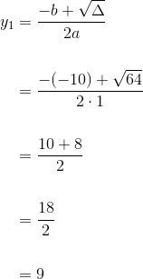
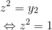
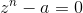
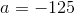
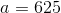
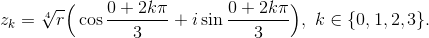
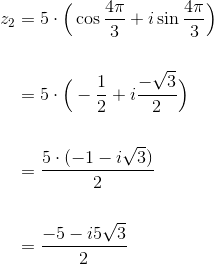

Ecuații bipătratice și ecuații binome
În cele ce urmează ne vom ocupa de rezolvarea unor ecuații algebrice de grad superior cu coeficienți în .
ECUAȚII BIPĂTRATICE
Definiția P49: Ecuație bipătratică
O ecuație bipătratică cu coeficienți în este o ecuație algebrică de forma:
Pentru a rezolva această ecuație se parcurg următorii pași:
- se notează și se obține ecuația de gradul doi: numită ecuația rezolventă a ecuației bipătratice;
- se rezolvă ecuația rezolventă în mulțimea , obținându-se soluțiile
- se scriu și se rezolvă ecuațiile și obținându-se soluțiile ale ecuației bipătratice date.
Exemple:
Să se rezolve ecuațiile în :
Rezolvare:
Observăm că ecuațiile date sunt bipătratice.
- Fie . Se obține ecuația rezolventă Rezolvăm această ecuație rezolventă.
Atunci avem că:
,
având soluțiile și
,
având soluțiile și
- Fie . Se obține ecuația rezolventă Rezolvăm această ecuație rezolventă.


Atunci avem că:
,
cu soluțiile și
,
cu soluțiile și
ECUAȚII BINOME
Definiția P50: Ecuație binomă
O ecuație binomă cu coeficienți în mulțimea este o ecuație algebrică de forma: unde
Înainte de a continua avem nevoie să ne reamintim, din clasa a X-a, următoarele noțiuni:
Pentru se cunosc:
- forma algebrică;
- modulul lui
- cu forma trigonometrică;
- formula lui Moivre.
Algoritmul de rezolvare a ecuației binome:
Se scrie ecuația binomă  sub forma Rezolvarea acestei ecuații, se reduce la determinarea rădăcinilor de ordinul  ale numărului complex
ale numărului complex
Dacă este scrierea sub formă trigonometrică a numărului atunci se obține:
Acestea sunt rădăcinile complexe ale lui 
Exemple:
Să se rezolve ecuațiile binome:
Rezolvare:
- Scriem ecuația binomă sub forma
Forma trigonometrică a numărului  se scrie folosind formula , unde
Avem . Pentru a avea loc această relație, și
Pentru a îndeplini simultan condițiile , respectiv trebuie ca
Așadar, forma trigonometrică a numărului este
Atunci, rădăcinile complexe ale lui le aflăm folosind formula:
Aflăm pe rând rădăcinile ecuației binome date:
Pentru avem că:
Pentru avem că:
Pentru avem că:
Luăm separat și calculăm respectiv
![\begin{align*}\cos\displaystyle\frac{5\pi}{3}&=\cos\Big(\displaystyle\frac{2\pi}{3}+\displaystyle\frac{3\pi}{3}\Big)\\\\ &=\cos\Big(\displaystyle\frac{2\pi}{3}+\pi\Big)\\\\ &=\cos\displaystyle\frac{2\pi}{3}\cdot\cos\pi-\sin\displaystyle\frac{2\pi}{3}\cdot\sin\pi\\\\ &=\cos\displaystyle\frac{2\pi}{3}\cdot(-1)-\sin\displaystyle\frac{2\pi}{3}\cdot0\\\\ &=-\cos\displaystyle\frac{2\pi}{3}\\\\ &=-\cos2\cdot\displaystyle\frac{\pi}{3}\\\\ &=-\Big(\cos^2\displaystyle\frac{\pi}{3}-\sin^2\displaystyle\frac{\pi}{3}\Big)\\\\ &=-\Big[\Big(\displaystyle\frac{1}{2}\Big)^2-\Big(\displaystyle\frac{\sqrt{3}}{2}\Big)^2\Big]\\\\ &=-\Big(\displaystyle\frac{1}{4}-\displaystyle\frac{3}{4}\Big)\\\\ &=-\displaystyle\frac{1-3}{4}\\\\ &=-\displaystyle\frac{-2}{4}\\\\ &=\displaystyle\frac{1}{2} \end{align*}](../../media/webbooks/338/2180/images/equations/dhmo6sjcaezm6bksq2t_6g==.gif)
![\begin{align*}\sin\displaystyle\frac{5\pi}{3}&=\sin\Big(\displaystyle\frac{2\pi}{3}+\displaystyle\frac{3\pi}{3}\Big)\\\\ &=\sin\Big(\displaystyle\frac{2\pi}{3}+\pi\Big)\\\\ &=\sin\displaystyle\frac{2\pi}{3}\cdot\cos\pi+\cos\displaystyle\frac{2\pi}{3}\cdot\sin\pi\\ \\&=\sin\displaystyle\frac{2\pi}{3}\cdot(-1)+\cos\displaystyle\frac{2\pi}{3}\cdot0\\ \\&=-\sin\displaystyle\frac{2\pi}{3}\\ \\&=-\sin2\cdot\displaystyle\frac{\pi}{3}\\\\ &=-2\cdot\sin\frac{\pi}{3}\cdot\cos\frac{\pi}{3}\\\\ &=-2\cdot\displaystyle\frac{\sqrt{3}}{2}\cdot\frac{1}{2}\\\\ &=-\displaystyle\frac{\sqrt{3}}{2} \end{align*}](../../media/webbooks/338/2180/images/equations/aer3h7uvt-orr-c-afshha==.gif)
Revenind la calcularea rădăcinei  , obținem:
, obținem:
Am găsit rădăcinile și care verifică ecuația binomă dată.
- Scriem ecuația binomă sub forma

Forma trigonometrică a numărului  se scrie folosind formula , unde
Avem . Pentru a avea loc această relație, și
Pentru a îndeplini simultan condițiile , respectiv trebuie ca sau
În cele ce urmează vom folosi .
Așadar, forma trigonometrică a numărului este 
Atunci, rădăcinile complexe ale lui le aflăm folosind formula:

![\begin{align*} z_k&=\sqrt[4]{625}\Big(\cos\displaystyle\frac{2k\pi}{3}+i\sin\displaystyle\frac{2k\pi}{3}\Big),\ k\in\{0,1,2,3\}\\\\ z_k&=\sqrt[4]{5^4}\Big(\cos\displaystyle\frac{2k\pi}{3}+i\sin\displaystyle\frac{2k\pi}{3}\Big),\ k\in\{0,1,2,3\}\\\\ z_k&=\left |5 \right | \cdot\Big(\cos\displaystyle\frac{2k\pi}{3}+i\sin\displaystyle\frac{2k\pi}{3}\Big),\ k\in\{0,1,2,3\}\\\\ z_k&=5\cdot\Big(\cos\displaystyle\frac{2k\pi}{3}+i\sin\displaystyle\frac{2k\pi}{3}\Big),\ k\in\{0,1,2,3\}\\ \end{align*}](../../media/webbooks/338/2180/images/equations/uprp_edtriy2jrlbfoddpw==.gif)
Aflăm pe rând rădăcinile ecuației binome date:
Pentru avem că:
Pentru avem că:
Luăm separat și calculăm respectiv
Revenind la calcularea rădăcinei  , obținem:
, obținem:
Pentru avem că:
Luăm separat și calculăm respectiv
Revenind la calcularea rădăcinei , obținem:

Pentru  avem că:
avem că:
Am găsit rădăcinile și care verifică ecuația binomă dată.